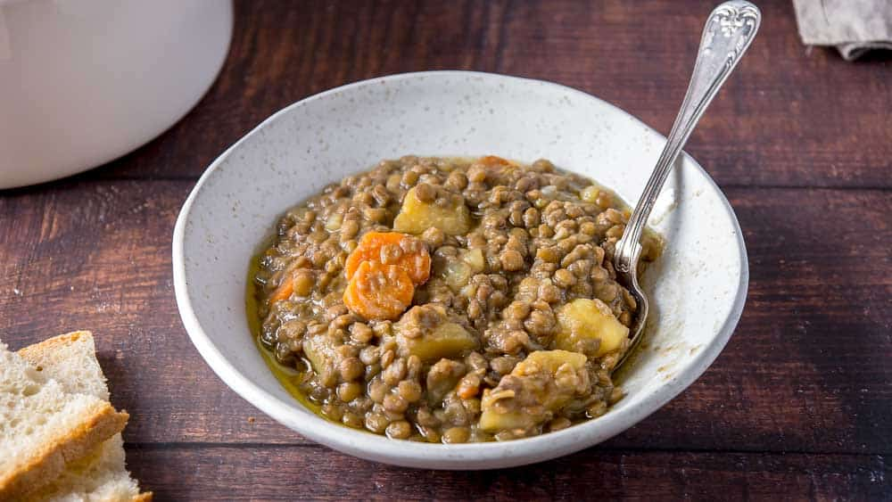

ITALIAN LENTIL SOUP
Homepage

Description
A Classic italian soup with lentils and some vegetables perfect as a winter warmer
Serves 4 and takes around 1 hour
Ingredients
- 250g dry lentils
- half a sliced onion
- 1 carrot cut into chunks
- 250g tomato passata
- 4 small potatoes
- stock cube
Instructions
- In a large saucepan cover the lentils with water and add the carrot and passata.
- Add stock cube and mix. Bring to boil and simmer for 20 minutes with a lid
- Meanwhile, slice the potatoes into cubes and add to the soup. Cook for another 20 minutes with the lid on
- Remove lid and cook for another 5 minutes, or until the soup reaches the disired thickness
Serve immediately ideally with bread